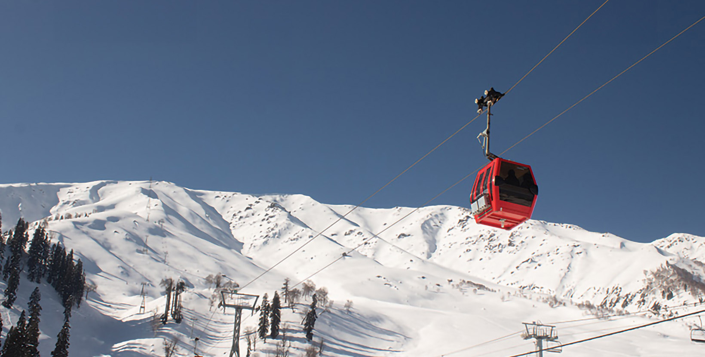
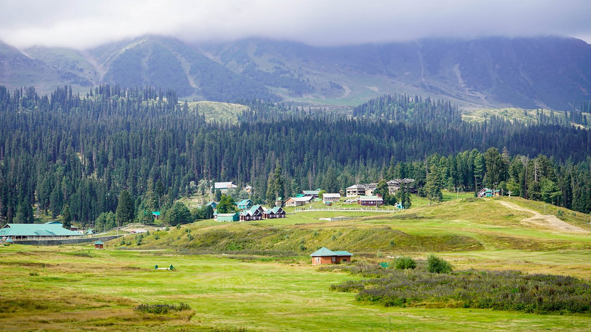
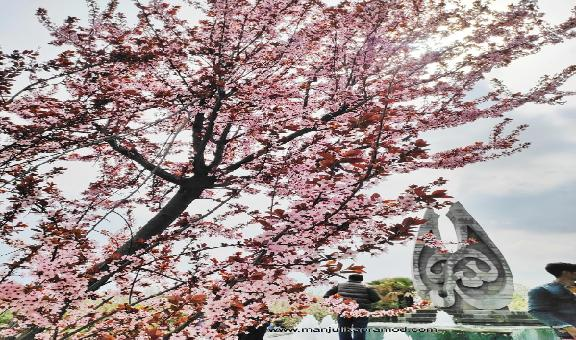

One of the world's highest cable cars, offering panoramic views of the Himalayas.

Gulmarg
Gulmarg is relatively accessible from Srinagar, making it a popular day trip or weekend getaway.

Gulmarg
Known as the "Meadow of Flowers" for its vibrant floral displays in the summer.
Gulmarg
Gulmarg is relatively accessible from Srinagar, making it a popular day trip or weekend getaway.

Gulmarg
Despite its popularity, Gulmarg retains a serene and peaceful atmosphere, especially during the off-season.
Gulmarg – The Serene Escape
GULMARG
Begin your day with a visit to the revered Shrine of Baba Reshi, a tranquil place of spiritual significance with intricate Persian-style architecture. Spend some time in reflection and awe of its beauty. Adorned with intricate Persian-style architecture, this revered site holds deep religious significance. Pilgrims and tourists are drawn to its tranquil ambiance, seeking blessings and solace.
Post-spiritual visit, you might feel hungry. Time to try some local food! You should give Kashmiri dishes a go. They're packed with different tastes, some of which might be new to you. Next, explore the historical St. Mary's Church, a striking example of British architectural influence. The church's serene ambiance and architectural grandeur make it a must-visit. It is a historical jewel nestled in the heart of Gulmarg. This captivating church stands as a testament to the enduring legacy of British architecture in the region. Its magnificent structure, adorned with striking design elements, beckons history enthusiasts and architectural connoisseurs.
After St. Mary's Church, take a leisurely walk in the lush Gulmarg Meadows, surrounded by scenic beauty. You can also opt for a horse ride if you wish and if you do not return to your accommodation and unwind. These meadows offer a serene escape, perfect for leisurely walks or horseback rides, as well as adrenaline-pumping adventure with skiing and snowboarding. In spring, the meadows come alive with a vibrant riot of wildflowers, creating a picturesque spectacle. As the day comes to an end, embrace the tranquillity of Gulmarg.
Almond Blooms in Badam Vaer Garden, Srinagar
The Badam Vaer (also known as Badamwari) garden in Srinagar is a truly enchanting place, particularly during the spring season when its almond trees burst into bloom. The garden is renowned for its breathtaking display of almond blossoms, which typically occur in March and April. The landscape transforms into a sea of pink and white, creating a visually stunning experience. Badam Vaer is a place where nature, history, and culture intertwine. It attracts both locals and tourists who come to enjoy the natural beauty and tranquil atmosphere. It's a must-visit destination during the spring season for anyone wanting to experience the beauty of Kashmir.
Historical and Cultural Significance
Gulmarg is nestled in the Pir Panjal Range of the Himalayas, boasting lush meadows, dense forests, and snow-capped peaks. During spring and summer, the meadows come alive with vibrant wildflowers, justifying its name. The scenic beauty provides ample opportunities for photography and nature walks. The presence of sites like the Shrine of Baba Reshi adds a spiritual dimension to Gulmarg. Gulmarg has been a popular location for Bollywood films, further embedding it in popular culture. Gulmarg's legacy as a skiing destination has fostered a strong sporting culture, attracting enthusiasts from around the world. Gulmarg has a rich history, having been a favored retreat for Mughal emperors and British officials. It features historical landmarks like St. Mary's Church. The area also has religious significance with places like the Shrine of Baba Reshi.
Adventure Activities and Sports
Skiing: Gulmarg is renowned as one of Asia's premier skiing destinations. It offers slopes for all skill levels, from beginners to experts. The high-altitude terrain and abundant snowfall make it ideal for powder skiing. Snowboarding: Snowboarding is also popular, with opportunities for freestyle and backcountry riding. The terrain parks and natural features provide exciting challenges. Heli-Skiing: For the ultimate thrill, heli-skiing takes you to untouched slopes high in the Himalayas. It's an exclusive and exhilarating experience for advanced skiers. Gondola Rides: While not strictly an adventure sport, the Gulmarg Gondola ride to Apharwat Peak is an adventure in itself. The high-altitude cable car offers breathtaking views and access to skiing areas. Summer Activities: Trekking: Gulmarg's meadows and mountains offer numerous trekking trails. Popular routes include treks to Apharwat Peak, Khilanmarg, and nearby alpine lakes.